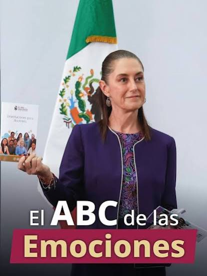
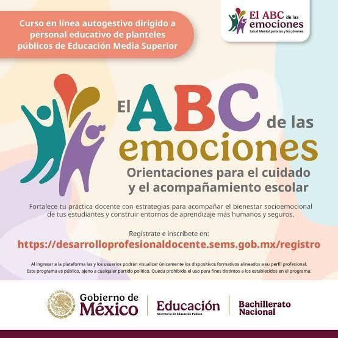
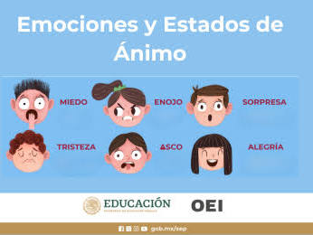
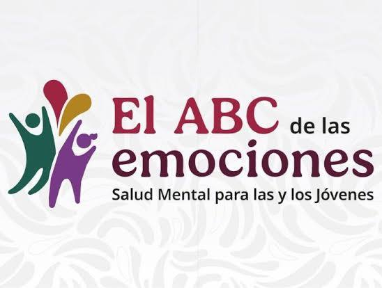
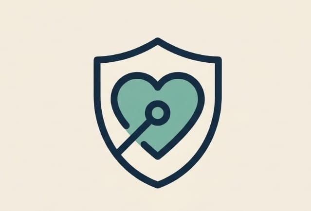

El ABC de las Emociones y el bienestar en entornos digitales.
Sitio oficial
El ABC de las Emociones en la crianza y el desarrollo infantil.
Sitio oficial
El ABC de las Emociones: Identifica, nombra y gestiona lo que sientes.
Sitio oficial
El ABC de las Emociones en el entorno laboral y el manejo del estrés.
Sitio oficialProyecto académico sobre emociones y vida virtual.

Equipo desarrollador del sitio web. ByteMe